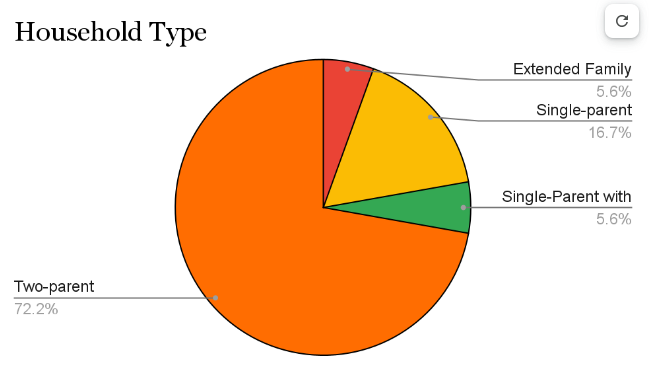
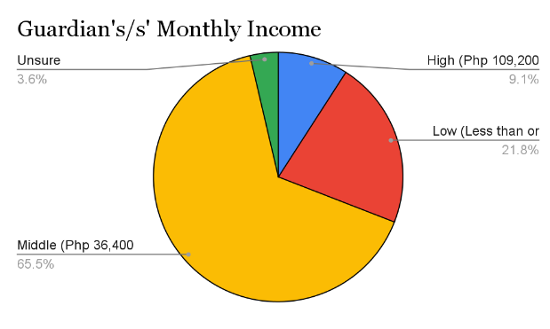
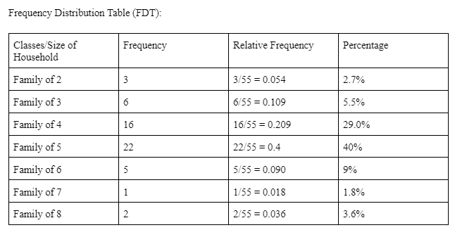
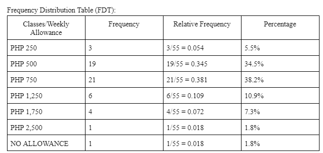

In this Pie Chart, we can infer that the extended family household and the single-parent with extended family household had 5.6% out of the 54 (sample). While 16.7% out of 54 (sample) voted for the single parent household. Lastly, the majority voted for the two-parent household which had 72.2% out of 54 (sample).

In this Pie Chart, we can see that 3.6% out of 55 are unsure of their guardian’s/s monthly income. 9.1% out of 55 people have high income. 21.8% out of 55 have low monthly income. Lastly, the majority 65.5% out of 55 are in the middle class since their guardian’s/s monthly income is from Php 36,400 to Php 109,200. (sample)


List of Descriptives for the Household Size Data:
-
Measures of the Center
Mean = 4.56
Median = 5
Mode = 5
-
Variability
Range = 6
Standard Deviation = 1.24
Variance = 1.55
Interquartile Range = 1
-
5-number Summary
Minimum = 2
Q1 Median = 4
Q2 Median = 5
Q3 Median = 5
Maximum = 8
List of Descriptives for the Weekly Allowance Data:
-
Measures of the Center
Mean = 1015.35
Median = 750
Mode = 750
-
Variability
Range = 2500 - 0 = 2500
Standard Deviation = 424.15
Variance = 179902.1
Interquartile Range = 250
-
5-number Summary
Minimum = 0
Q1 Median = 500
Q2 Median = 750
Q3 Median = 750
Maximum = 2500

Conclusion
We have made several significant inferences after obtaining and evaluating our acquired data. From this, we have discovered the evident pattern and the links between a family’s financial capabilities and their children’s allowance. This relationship highlights the important role that a person's financial situation has in determining the amount of financial support given to children. Families with higher salaries can provide their children with a larger weekly allowance to cover their needs and extracurricular activities. While other factors also play a role in this, such as a person’s living status. For example, a regional scholar may have a larger allowance while a city scholar may have a limited one as they have different needs.
The majority of our respondents are part of the middle class whilst also having a two-parent household. The financial stability of one's family and upbringing can be greatly impacted by the factors stated previously. Dual income streams are frequently present in two-parent households, which can contribute to some level of financial security. However, a larger middle-class or lower-class family could have difficulty supporting their children as their resources are limited and shared within the household. Regardless of a family’s income, having a larger family surely affects one's weekly allowance and a family’s overall budget plan.
Our analysis suggests and supports the significance of a guardian’s monthly income, household type, household size, and an individual’s weekly allowance. This allows us insight into the interconnections between the socioeconomic structure. Families in the Lower and Middle classes are subsequent to financial instability and lack of substantial support. On the other hand, high-income families, though still vulnerable to these hardships, are less likely to suffer from penury but are jeopardized by unique financial problems such as the ignorance and inability to budget wisely. These results highlight the complexity of family economics and the significance of taking into account a range of variables when evaluating financial stability and support systems within households.